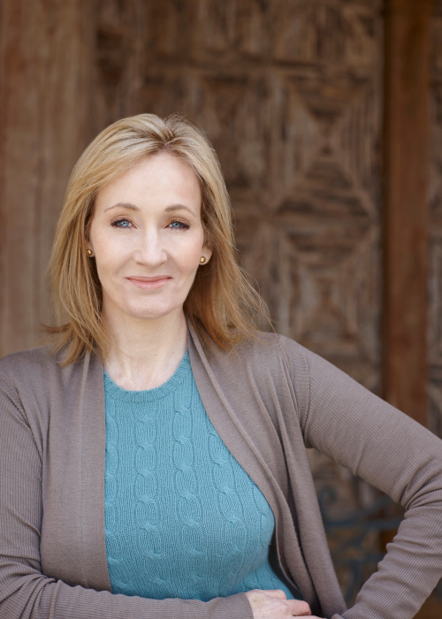
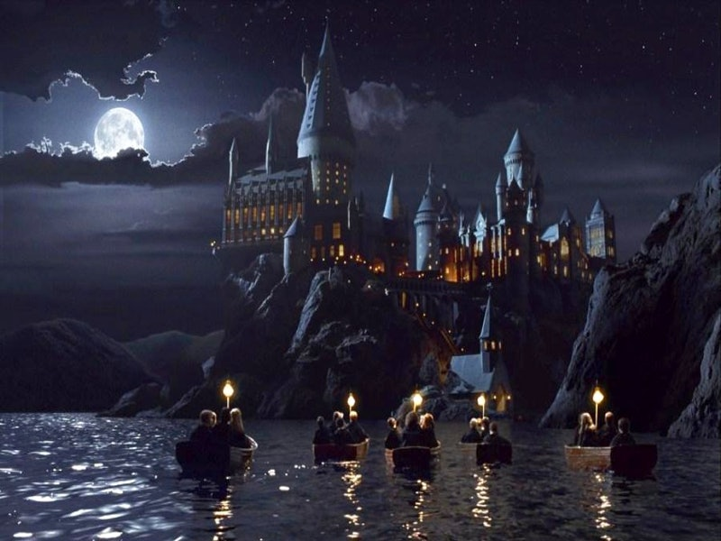

Klik hier Dit is Joanne Rowling, ook wel bekend als J.K. Rowling. De K staat voor de naam van haar oma die Kathleen heette. Ze is onder andere de schrijfster van Harry Potter, Fantastic beasts and where to find them en ook van een paar boeken voor volwassenen. Ze heeft een deel van haar boeken uitgebracht onder het pseudoniem Robert Galbraith. Ze is een Britse schrijfster geboren in Yate bij Bristol op 31 juli 1965. Haar ouders heten Peter en Anne Rowling. Ze studeerde aan de universeriteit van Exeter Frans en Klassieke Cultuur, in 1986 was ze afgestudeerd. Hierna heeft ze meerdere kantoorbanen gehad. In 1991 verhuisde ze naar Portugal waar ze Engels lerares werd, hier ontmoette ze ook haar eerster man de tv-journalist Jorge Arantes. Met hem kreeg ze haar eerste dochter Jessica in 1993. Nadat haar huwelijk strandde verhuisde weer terug naar Engeland om met haar dochter in Edinburgh te wonen. Hierna ontmoette ze haar tweede man Neil Murray waarmee ze in 2003 een zoontje kreeg en twee jaar later, in 2005, een dochter. Nu vraag je je natuurlijk af wanneer Rowling dan de Harry Potter boeken heeft geschreven. Dit gebeurde in 1990 tijdens een vier uur lang vertraagde treinreis van Manchester naar London. Tijdens deze treinreis bedacht ze de verhaallijn In de volgende vijf jaar werkte ze deze verhaallijn uit tot de zevendelige serie die we nu kennen.In enim justo, rhoncus ut, imperdiet a, venenatis vitae, justo. Nullam dictum felis eu pede mollis pretium. Integer tincidunt. Cras dapibus. Vivamus elementum semper nisi. Aenean vulputate eleifend tellus. Aenean leo ligula, porttitor eu, consequat vitae, eleifend ac, enim. Aliquam lorem ante, dapibus in, viverra quis, feugiat a, tellus. Phasellus viverra nulla ut metus varius laoreet. Quisque rutrum. Aenean imperdiet. Etiam ultricies nisi vel augue. Curabitur ullamcorper ultricies nisi. Nam eget dui.

Etiam rhoncus. Maecenas tempus, tellus eget condimentum rhoncus, sem quam semper libero, sit amet adipiscing sem neque sed ipsum. Nam quam nunc, blandit vel, luctus pulvinar, hendrerit id, lorem. Maecenas nec odio et ante tincidunt tempus. Donec vitae sapien ut libero venenatis faucibus. Nullam quis ante. Etiam sit amet orci eget eros faucibus tincidunt. Duis leo. Sed fringilla mauris sit amet nibh. Donec sodales sagittis magna. Sed consequat, leo eget bibendum sodales, augue velit cursus nunc, quis gravida magna mi a libero. Fusce vulputate eleifend sapien. Vestibulum purus quam, scelerisque ut, mollis sed, nonummy id, metus. Nullam accumsan lorem in dui. Cras ultricies mi eu turpis hendrerit fringilla. Vestibulum ante ipsum primis in faucibus orci luctus et ultrices posuere cubilia Curae; In ac dui quis mi consectetuer lacinia.
Nam pretium turpis et arcu. Duis arcu tortor, suscipit eget, imperdiet nec, imperdiet iaculis, ipsum. Sed aliquam ultrices mauris. Integer ante arcu, accumsan a, consectetuer eget, posuere ut, mauris. Praesent adipiscing. Phasellus ullamcorper ipsum rutrum nunc. Nunc nonummy metus. Vestibulum volutpat pretium libero. Cras id dui. Aenean ut eros et nisl sagittis vestibulum. Nullam nulla eros, ultricies sit amet, nonummy id, imperdiet feugiat, pede. Sed lectus. Donec mollis hendrerit risus. Phasellus nec sem in justo pellentesque facilisis. Etiam imperdiet imperdiet orci. Nunc nec neque. Phasellus leo dolor, tempus non, auctor et, hendrerit quis, nisi.